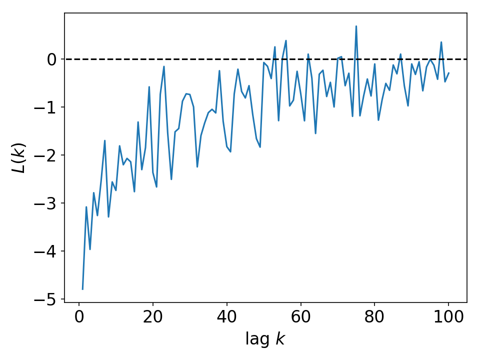

Leverage Effect¶
Description¶
The leverage effects refer to the tendency that past price return has the negative correlation with future volatility [BMP01]. According to [BMP01][QZRT06], this statistical property is quantified by the following lead-lag correlation function
In contrast to other statistical properties, this property is market dependent according to [QZRT06] While the negative correlation (leverage effect) is observed in German DAX, the positive correlation (so-called anti-leverage effect) is detected in Chinese markets.
{kind=link}
Fig. Averaged result for S&P500 firms daily price return
Code Example¶
import datetime as dt
import pandas_datareader.data as web
import numpy as np
import stylefact.finance as sff
import stylefact.visualize as sfv
st = dt.datetime(1990,1,1)
en = dt.datetime(2020,1,1)
data = web.get_data_yahoo('GM', start=st, end=en)
prices = data['Adj Close'].to_numpy()
log_prices = np.log(prices)
returns = np.diff(log_prices)
x,y = sff.leverage_effect(returns)
sfv.leverage_effect(x,y,'leverage_effect')
References¶
- BMP01(1,2)
Jean-Philippe Bouchaud, Andrew Matacz, and Marc Potters. Leverage effect in financial markets: the retarded volatility model. Physical Review Letters, 87:228701, 2001.
- QZRT06(1,2)
T. Qiu, B. Zheng, F. Ren, and S. Trimper. Return-volatility correlation in financial dynamics. Physical Review E, 73(6):065103, 2006.